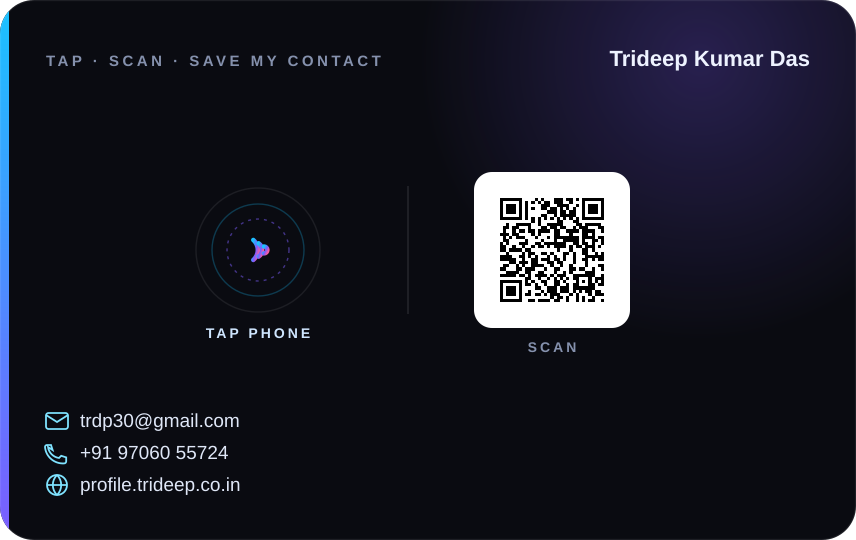

Dark, redefined: near-black with a single accent, a center tap-ripple marking the chip, and trimmed content — identity on the front, QR + three essentials on the back. Pure vector. Print / Save PDF for a true-size proof.
